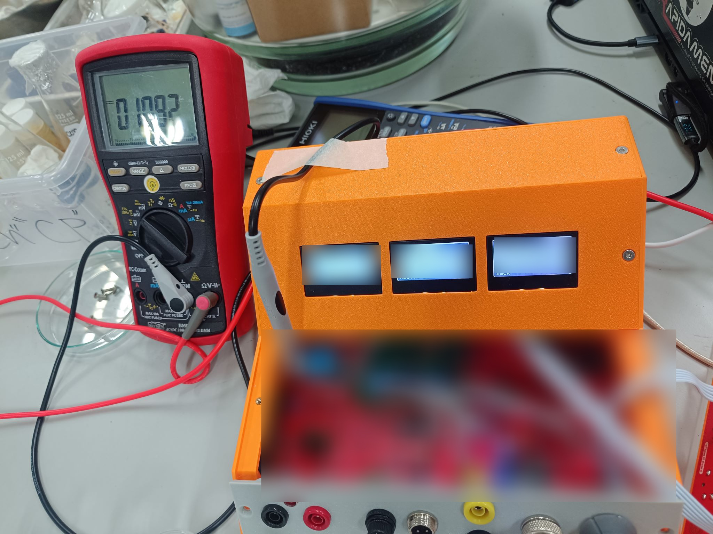
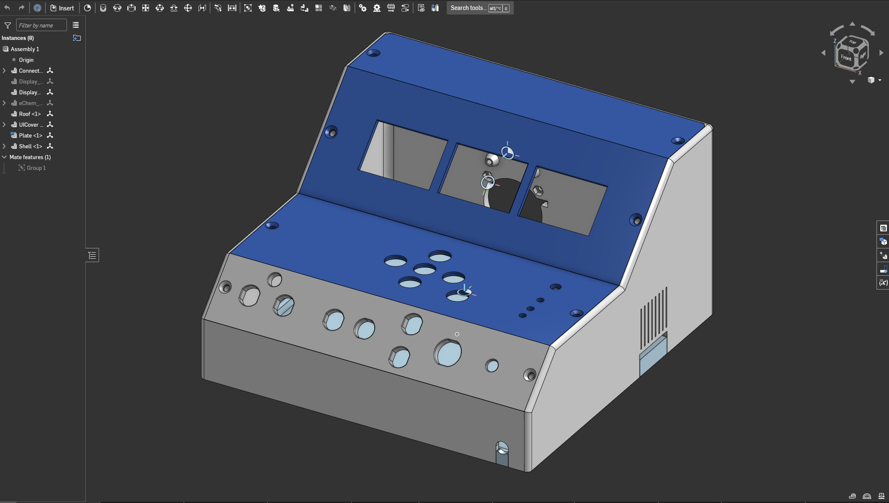
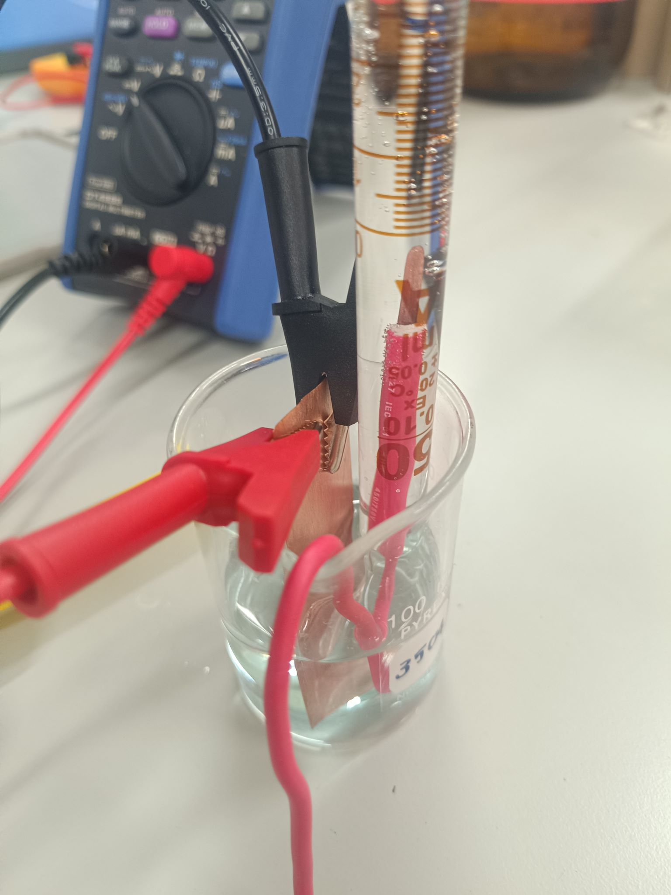

Loading…
| Role | Embedded Systems Engineering Intern, Ivory Electronics Co., Ltd. (Nonthaburi, Thailand) |
|---|---|
| Program | 2100301 Engineering Practice, B.Eng. Computer Engineering, Chulalongkorn University |
| Duration | 11 weeks (352 hours, May 18 – July 31, 2026) |
| Supervisor | Attakawin Paetep |
Overview
Ivory Electronics is an electronics consultancy led by Dr. Daniel Melendrez, focusing on embedded systems, PCB design, custom instrumentation, and dev kits. Following a one-week warm-up project building a milliohmmeter, I spent the remaining ten weeks building a benchtop laboratory instrument from scratch. The unit consolidates four core functions into a single enclosure:
- Conductivity / TDS: Measures total dissolved solids in liquid solutions.
- Temperature: Tracks solution temperature for monitoring and TDS compensation.
- Electrolysis Current: Measures current drawn during electrolysis runs.
- Data Logging: Writes continuous measurement records to external storage.

Firmware Development
Developed in C++ using the pioarduino framework on an ESP32 via VS Code. Key components included:
- Writing peripheral drivers to integrate the full sensor suite.
- Designing an on-device interface for a small screen under strict memory limits.
- Building a persistent settings system to save configuration state.
- Implementing a calibration subsystem to convert raw ADC counts into calibrated units.
- Setting up external memory logging for continuous data collection.
- Refactoring the initial single-file codebase into modular components as features grew, alongside writing inline code documentation and a user manual.
Hardware & ADC Troubleshooting
Initial ADC readings showed persistent measurement offsets. After extensive software debugging without results, physical probing with a multimeter revealed the root cause: the voltage reference chip on the board was out of tolerance, introducing systematic error into every conversion.
Resolving this shifted my debugging approach. Instead of assuming issues were firmware-bound, I incorporated schematic reviews, power rail probing, and reference-instrument checks into the workflow. I also built a runtime-state introspection tool to monitor the ESP32's internal state during live operation.
Enclosure & Mechanical Design
Using Onshape, I modeled a custom sloped enclosure around the measured dimensions of the PCB, display, control buttons, and rear connectors. The design was revised to account for component tolerances and wire routing before 3D printing the final shell.

Validation & Field Testing
The instrument was tested against live electrolysis setups, including a copper-electrode cell with an inverted graduated cylinder for gas collection. Testing under actual experimental conditions exposed stability issues and edge cases missed during bench testing, leading to reworks of both the display logic and the calibration workflow.

Key Engineering Takeaways
- Hardware dictates software requirements: Final system behavior only stabilized once the physical hardware was running, requiring several firmware rewrites.
- Codebase maintainability: As the project progressed, untracked side effects began breaking existing features. Splitting the project into independent modules and documenting code concurrently resolved this.
- Lab testing vs. field testing: Bench tests failed to catch noise and stability issues that appeared immediately during actual electrolysis runs.
- System integration: Mechanical constraints, hardware layout, and firmware design are interdependent—a functional PCB is incomplete if it cannot be assembled cleanly inside its enclosure.
The Report Repository
The internship report is a version-controlled XeLaTeX document rather than a Word file.
Thai has no spaces between words, so XeTeX treats a whole run as one unbreakable word and
the text overruns the margins. \XeTeXlinebreaklocale "th_TH" enables the ICU
Thai word breaker, with document-wide hyphenation suppression, since Thai orthography has
no hyphen (ผู้ควบ-คุม is wrong).
\url{} splits text into per-character boxes so it can break anywhere, which
detaches Thai vowels and tone marks from their base consonants (สระจม). I wrote a
\thaiurl macro that renders shaped Thai as the link text and uses the
percent-encoded form only as the target.
The rest of the faculty format is encoded in the preamble: Angsana New, 16pt bold Thai
body against 14pt inline English via an \eng{} macro, A4 with prescribed
margins, 1.5 line spacing, Thai-localized captions and headings, and widow/orphan
suppression. The cover page is full-bleed via eso-pic, with appendices for
the map and the five bi-weekly progress reports. The last commit was image compression,
taking the output PDF from 14 MB to 4 MB.